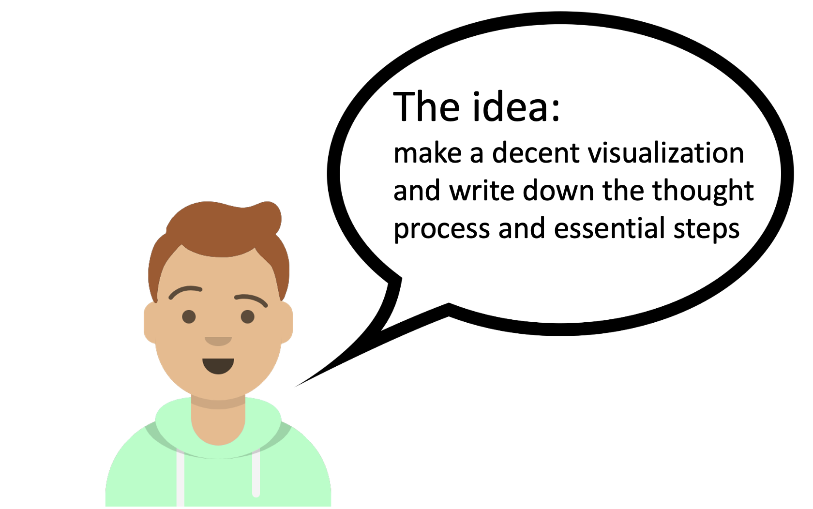
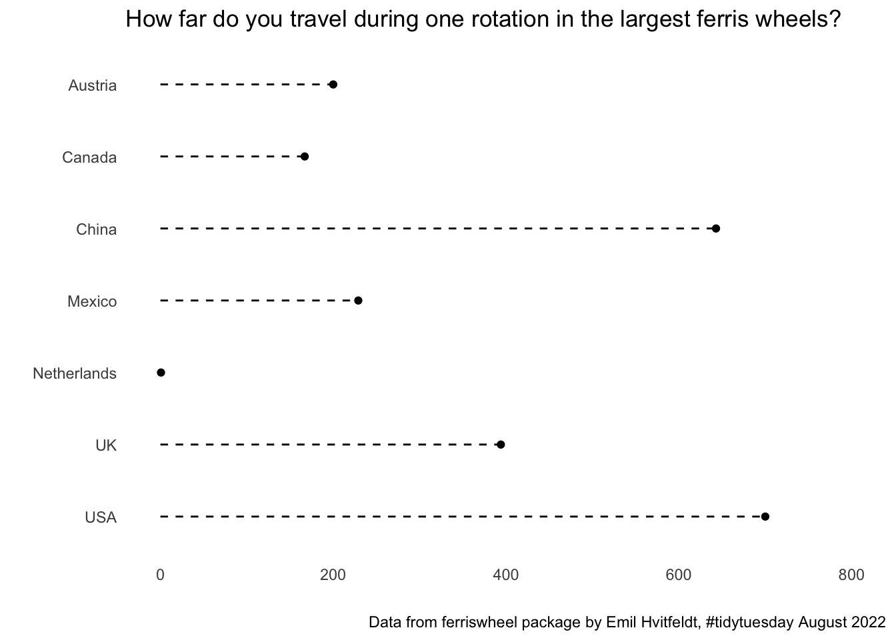
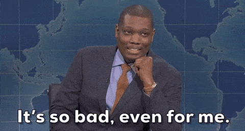
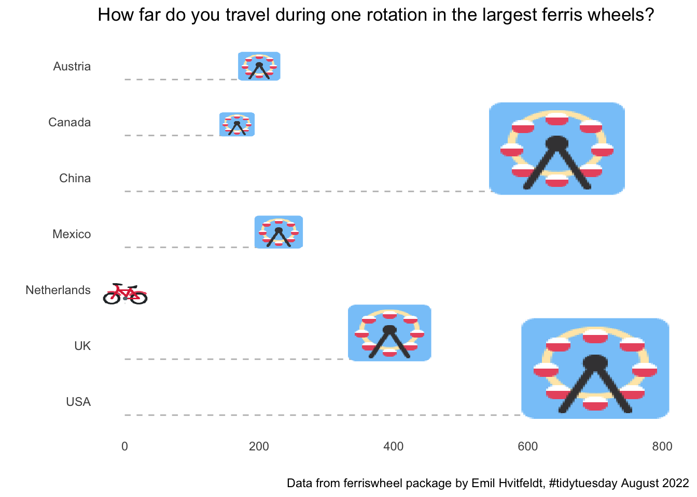
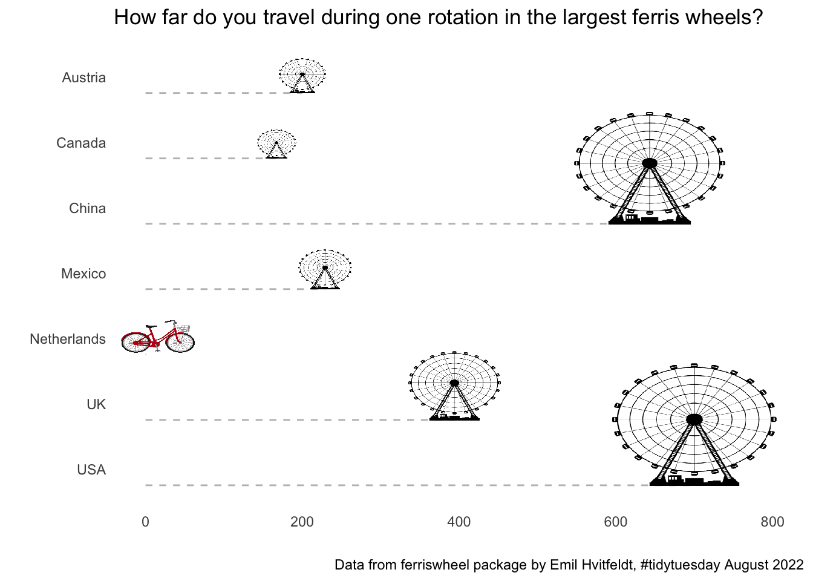
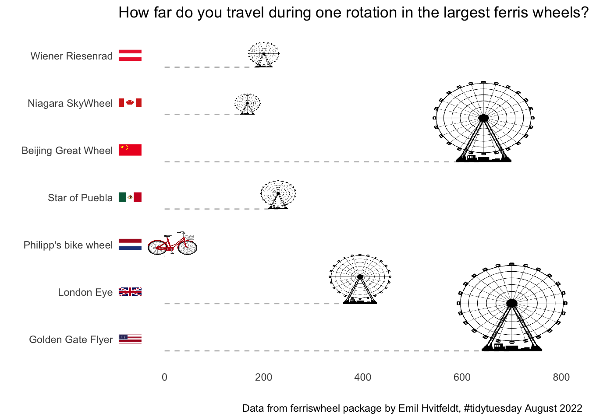
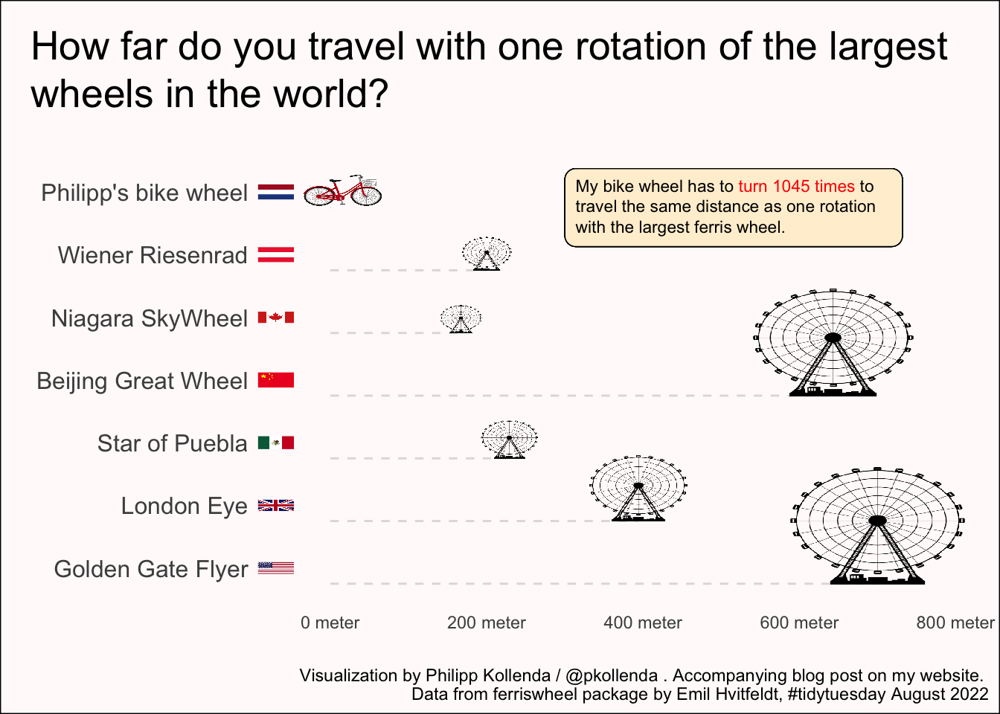

Using tidy tuesday to combine creativity and data visualization skills.
What I love about data visualization is how it combines creative thinking (what do I want to show?) with technical programming skills (how do I show this?). Nowhere do you combine these two things as elegantly as in the weekly tidy tuesday challenges. Here, data wizards around the word play and practice with fascinating datasets from chocolate bar ratings to the mobility of ERASMUS students to – this week – data on ferris wheels around the world.1 As someone who goes pale in any kind of rollercoaster, ferris wheels feel just about advantageous enough to start my own tidy tuesday journey.

Where to start
Before opening R, I think about what I find fascinating about the topic and what I want to convey with my visualization. Here I am sticking to some descriptive analysis and won’t overthink it, so let’s just go with one of the first thing that came to my mind… ferris wheels are really big!
If a ferris wheel would be an actual wheel, how far would it travel during one rotation?2
The message gives me part of the structure for the visualization. Here, I want to select a few examples from different countries and show the diameter on the x-axis. I’ve created a lot of horizontal bar charts for a consultancy this summer, so naturally this is my starting point.
A great thing about these just-for-fun challenges is that you can use them to add 1-2 new skills to your visualization toolbox. For this challenge I want to learn two things:
- How do I add icons (ferris wheels 🎡, obviously) instead of dots in the chart?
- How do I add country flags on the y-axis.
I don’t want to spend the entire evening on this, so I think it is important to limit myself to only these two new features. I will also concentrate on them and not care too much (yet) about other things, like titles, background, themes, etc…
Because this isn’t a mystery novel, I am giving away how the visualization will look like in the end. Don’t click if you want to keep the suspense…
The project is taking shape
With these initial thoughts out of the way, I can roughly sketch the visualization process and outline of this post.
- A first look at the data. Choose which points to show.
- Create the simplest graph that shows the intended message.
- Add the ferris wheel icons.
- Add the country flags.
- Clean up the graph.

A first look at the data
Let’s first install the necessary packages and load and save the data.
#install.packages(c("tidytuesdayR", "tidyverse", "here", "ggimage", "countrycode", "ggtext"))
library(tidyverse)
library(here)
#data <- tidytuesdayR::tt_load("2022-08-09")$wheels
#write_rds(data, here("posts", "tt2022-08-09_ferriswheels", "data", "wheels"))
data <- read_rds(here("posts", "tt2022-08-09_ferriswheels", "data", "wheels"))The entire dataset collects 22 variables on 73 ferris wheels in 26 different countries. This is way to much information to display, so let’s keep only a handful of ferris wheels and only information on their name, country, height and diameter.
This is the data that we will use. As a comparison, I will add data from a more typical wheel: my dutch bicycle wheel.
data <- bind_rows(data, tibble(country = "Netherlands", name = "Philipp's bike wheel", height = 0.67, diameter = 0.67))
knitr::kable(data)| country | name | height | diameter |
|---|---|---|---|
| China | Beijing Great Wheel | 693.00 | 643.00 |
| USA | Golden Gate Flyer | 728.00 | 700.00 |
| UK | London Eye | 443.00 | 394.00 |
| Canada | Niagara SkyWheel | 175.00 | 167.00 |
| Mexico | Star of Puebla | 262.00 | 229.00 |
| Austria | Wiener Riesenrad | 212.00 | 200.00 |
| Netherlands | Philipp’s bike wheel | 0.67 | 0.67 |
The simplest-possible graph
p <- ggplot(data, aes(y = fct_rev(country), x = diameter)) +
labs(x = "", y = "",
# x = "Diameter of the highest ferris wheel in the country (in meter)"
title = "How far do you travel during one rotation in the largest ferris wheels?",
caption = "Data from ferriswheel package by Emil Hvitfeldt, #tidytuesday August 2022") +
scale_x_continuous(limits = c(0, 800)) +
theme_minimal() +
theme(panel.grid = element_blank())
p +
geom_point() +
geom_segment(aes(y = country, yend = country, x = 0, xend = diameter), linetype = "dashed")

This isn’t pretty, but that’s not the point. Having a bare-minimum working example helps to think about whether the graph type fits and what can be done to emphasise the key message. It also helps to create a to-do list of things to improve: like a different order of ferris wheels, maybe adding an empty row to separate the bike data from the ferris wheel data, a label or subtitle that puts the ferris wheel in relation to the bike wheel, another background color, adding ‘meter’ to the x-axis and more). But let us first tackle the two big learnings that I wanted to get out of the challenge: replacing the dots with icons (now I also need a bike, 🚲) and adding the country flags.
Add the ferris wheel icons
As always, there are many ways to Rome. Here I am going with the ggimage package maintained by Guangchuang YU. I have not used this before, but a look at the online vignette makes me hopeful that I can use this for the ferris wheel icons and the country flags 😃
There are two ways we can go. The first is to use the ggimage::geom_emoji and to insert the ferris wheel and bicycle emojis that I have used throughout the post. That seems simple, we just need the unicode to pass it to the function. That’s easy to look up at, e.g. https://unicode.org/emoji/charts/full-emoji-list.html.
data$size = if_else(data$name == "Philipp's bike wheel", 0.075, data$diameter / max(data$diameter) * 0.25)
p +
geom_segment(aes(y = fct_rev(country), yend = fct_rev(country), x = 0, xend = diameter), linetype = "dashed", color = "gray", position = position_nudge(y = - 0.25)) +
ggimage::geom_emoji(aes(image = if_else(name == "Philipp's bike wheel", "1f6b2", "1f3a1")), position = position_nudge(y = (data$size / 0.3) - 0.25), size = data$size)
This looks OK. The most complicated part was actually that I wanted to scale the size of the image by the size of the ferris wheel, which required making an extra size column and experimenting a lot with position_nudge to let the dashed line go to the bottom of the icon, not to the middle. But I am not super happy with the emoji’s, so let’s try to download some images of ferris wheels and use those with ggimage::geom_image() instead.
I’ll first download a simple transparent ferris wheel png file (from here) and use a bike icon (from here).
ferris_path <- here("posts", "tt2022-08-09_ferriswheels", "images", "ferriswheel.png")
bike_path <- here("posts", "tt2022-08-09_ferriswheels", "images", "bike.png")
p1 <- p +
geom_segment(aes(y = fct_rev(country), yend = fct_rev(country), x = 0, xend = diameter),
linetype = "dashed", color = "gray",
position = position_nudge(y = - 0.25)) +
ggimage::geom_image(
aes(image = if_else(data$name == "Philipp's bike wheel", bike_path, ferris_path)),
position = position_nudge(y = (data$size / 0.27) - 0.25,
x = if_else(data$name == "Philipp's bike wheel", 15, 0)),
size = data$size * 1.5)
p1
I’m happy with this. Onwards to do the country flags!
Add the country flags
In the plots so far, I kept the country names on the y-axis. However, I would prefer to use the actual names of the ferris wheel and replace the country names with flags. We’ll continue with the ggimage package, which contains a geom_flag() function. The package expects country codes (e.g. NL, US), so we need to transform the names by hand using the countrycodes package.
# Create the country labels from the country names
data$code <- countrycode::countrycode(data$country, origin = "country.name", destination = "iso2c")
# Sort the factor levels of the 'name' variable alphabetically *by country* (the combination of arrange and fct_inorder does that, there are surely smarter ways)
data <- data |> arrange(country)
data$name <- fct_inorder(factor(data$name))
# Create the graph again from scratch because instead of mapping the country to the y axis, I now
# map the name to the y axis. Again, surely there are smarter ways to do that...
# I also move the flags a bit to the left of the x axis and expand the limits of the plot accordingly.
p2 <-
ggplot(data, aes(y = fct_rev(name), x = diameter)) +
geom_segment(aes(y = fct_rev(name), yend = fct_rev(name), x = 0, xend = diameter),
linetype = "dashed", color = "gray",
position = position_nudge(y = - 0.25)) +
ggimage::geom_image(aes(image = if_else(name == "Philipp's bike wheel", bike_path, ferris_path)),
position = position_nudge(y = (data$size / 0.27) - 0.25,
x = if_else(data$name == "Philipp's bike wheel", 15, 0)),
size = data$size * 1.5) +
ggimage::geom_flag(x = -70, aes(image = code)) +
labs(x = "", y = "",
title = "How far do you travel during one rotation in the largest ferris wheels?",
caption = "Data from ferriswheel package by Emil Hvitfeldt, #tidytuesday August 2022") +
scale_x_continuous(limits = c(-50, 800)) +
theme_minimal() +
theme(panel.grid = element_blank())
p2
This looks fine. The main headache in the code chunk above was replacing the mapping of the y axis to show the name (and not the country) and correcting the ordering of the observations.
Clean up the graph
I am happy with how the flags and ferris wheels turned out and am now ready to go back to the to-do list from the beginning with some minor things to clean up the graph. This is a playful challenge and ferris wheels are fun, so let’s go for a very light pinkish background colour. I am also adding a text box (using the ggtext package) to use my bicycle wheel as an example to show just how big these ferris wheels are.
Code
turns <- pull(round(data[which(data$diameter == max(data$diameter)), "diameter"] / data[data$name == "Philipp's bike wheel", "diameter"]))
data$name <- fct_relevel(data$name, "Philipp's bike wheel")
p3 <-
ggplot(data, aes(y = fct_rev(name), x = diameter)) +
geom_segment(aes(y = fct_rev(name), yend = fct_rev(name), x = 0, xend = diameter),
linetype = "dashed", color = "gray", alpha = 0.5,
position = position_nudge(y = -0.25)) +
ggimage::geom_image(aes(image = if_else(name == "Philipp's bike wheel", bike_path, ferris_path)),
position = position_nudge(y = (data$size / 0.27) - 0.25,
x = if_else(data$name == "Philipp's bike wheel", 15, 0)),
size = data$size * 1.5) +
ggimage::geom_flag(x = -70, aes(image = code)) +
labs(x = "", y = "",
title = "How far do you travel with one rotation of the largest wheels in the world?",
caption = "Visualization by Philipp Kollenda / @pkollenda . Accompanying blog post on my website. \n Data from ferriswheel package by Emil Hvitfeldt, #tidytuesday August 2022") +
ggtext::geom_textbox(aes(x = 300, y = 6.75, hjust = 0,
label = glue::glue("My bike wheel has to <span style='color: red;'>turn {turns} times</span> to travel the same distance as one rotation with the largest ferris wheel.")),
fill = "papayawhip", width = unit(6, "cm"), size = 3) +
scale_x_continuous(limits = c(-50, 800), labels = scales::label_number(suffix = " meter")) +
theme_minimal() +
theme(panel.grid = element_blank(), legend.position = "none",
plot.title.position = "plot", plot.title = ggtext::element_textbox_simple(size = 20, padding = margin(c(10, 10, 20, 10))),
axis.text.y = element_text(size = 12)) +
theme(plot.background = element_rect(fill = "#FFFAFA"))
p3
And that’s it.
I am happy with how this visualization turned out and glad I learned something about how to insert flags, icons and other images with the ggimage package. I will now hop on my bicycle and think of the Golden Gate Flyer… approximately every 1045 (bike) wheel turn.
Footnotes
Sidenote: Neal Grantham has a cool Shiny app to browse previous tidy tuesday submissions.↩︎
Perceptive readers may have noticed that this is just the diameter of the wheel. But, doesn’t that sound much less exciting?↩︎